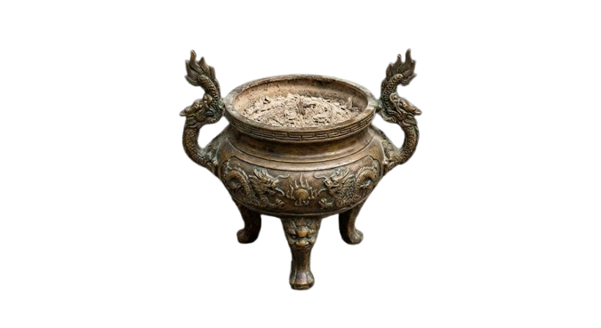
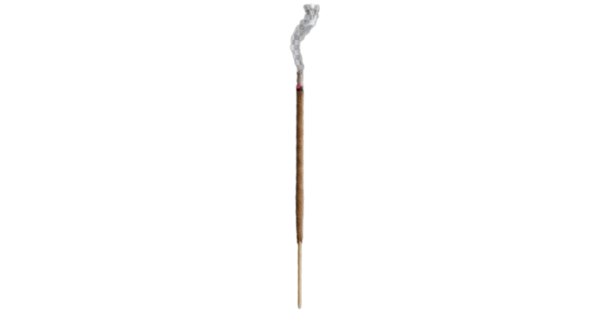

(Hãy viết những mong cầu thiện lành cho bản thân và gia quyến, chư Phật chứng minh lòng thành của bạn)
Mọi sự phát tâm của quý vị sẽ giúp duy trì trang web này và một phần được gửi đến những hoàn cảnh khó khăn.
STK: 8338988888 - Ngân hàng MB
© 2024 Ngôi Chùa Bình An Online. All rights reserved.